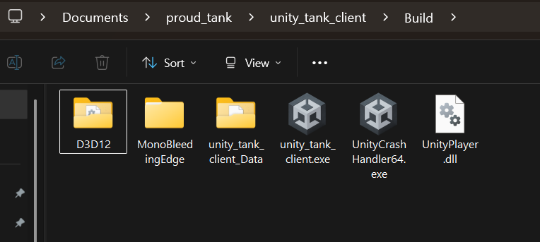
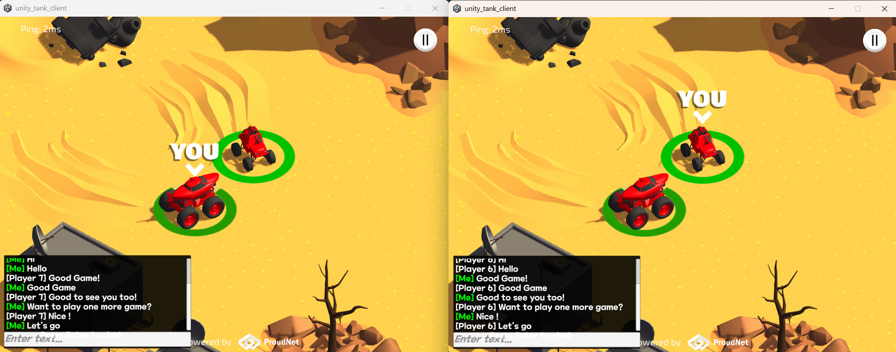

Dự Án Unity Client Game Tank
Triển khai Unity client cho game tank nhiều người chơi sử dụng thư viện mạng ProudNet, được xây dựng dựa trên template hướng dẫn tank chính thức của Unity với chức năng nhiều người chơi và chat được cải tiến.
📋 Mục Lục
- Điều Kiện Tiên Quyết
- Demo Game WebGL Build
- Cấu Trúc Dự Án
- Ghi Chú Phát Triển
- Bắt Đầu
- 1. Tạo và Thiết Lập Dự Án Unity
- 2. Tích Hợp ProudNet Unity
- 2.5. Quy Trình Tích Hợp PIDL
- 3. Tích Hợp Tank Multiplayer
- 4. Kiểm Tra Chức Năng Multiplayer
- 5. Kiểm Tra Tính Năng Multiplayer
- 6. Triển Khai WebGL (Tùy Chọn)
- Khắc Phục Sự Cố
Điều Kiện Tiên Quyết
Trước khi xây dựng dự án Unity client này, bạn phải hoàn thành Thiết Lập Tank Server từ tài liệu trước đó và cài đặt các thành phần sau.
Cấu Trúc Thư Mục Yêu Cầu
project_root/
├── tank_server/ # Dự án server (từ thiết lập trước đó)
│ ├── Common/
│ ├── Server/
│ ├── Client/
│ └── Server_CPP/
├── ProudNet/ # Yêu cầu: Các file từ cài đặt ProudNet
│ ├── doc/
│ ├── include/
│ ├── lib/
│ ├── Sample/
│ └── util/
└── tank_unity_client/ # Dự án Unity này (sẽ được tạo)
├── Assets/
├── Packages/
└── ProjectSettings/
Cài Đặt Phần Mềm Yêu Cầu
- Unity Hub và Unity Editor (khuyến nghị 2021.3 LTS hoặc mới hơn)
- ProudNet Unity Tank Client Sample Package - Có sẵn từ GitHub tại https://github.com/Nettention/proudnet_sample_tank_server/releases/tag/0.99
- Tank Server Hoàn Chỉnh - Từ tài liệu thiết lập server trước đó
Vị Trí ProudNet Unity Tank Client Sample Package
ProudNet Unity Tank Client Sample Package có thể được tải xuống từ:
https://github.com/Nettention/proudnet_sample_tank_server/releases/tag/0.99 File: tank_unity_client_proudnet_sample.unitypackage
Repository Mẫu Unity 6 Hoàn Chỉnh
Đối với những người muốn bỏ qua quá trình thiết lập thủ công, một dự án mẫu Unity 6 hoàn chỉnh với tất cả các bước tích hợp đã hoàn thành có sẵn tại:
GitHub Repository: https://github.com/Nettention/proudnet_sample_tank_unity_client
Repository mẫu hoàn chỉnh này bao gồm:
- Dự án Unity 6 với tất cả các thành phần ProudNet đã được tích hợp sẵn
- Các scene và script mạng đã được cấu hình sẵn
- Game tank nhiều người chơi sẵn sàng chạy
- Tất cả các DLL cần thiết và cài đặt nền tảng đã được cấu hình
Khởi Động Nhanh với Mẫu Hoàn Chỉnh:
- Clone repository:
git clone https://github.com/Nettention/proudnet_sample_tank_unity_client.git - Mở dự án trong Unity 6 (hoặc Unity 2021.3 LTS+)
- Mở scene:
Assets/Proundnet_Demo/DemoScene/Demo_Networkd_Game_Desert.unity - Đảm bảo tank server đang chạy
- Nhấp Play để kiểm tra ngay lập tức
Tùy chọn này được khuyến nghị cho các nhà phát triển muốn nhanh chóng kiểm tra chức năng nhiều người chơi mà không cần trải qua quá trình tích hợp hoàn chỉnh được mô tả trong tài liệu này.
Demo Game WebGL Build
Trải nghiệm ProudNet Tank Game trực tiếp trong trình duyệt của bạn! Đây là bản build WebGL trực tiếp của Unity client kết nối với server nhiều người chơi thực được host trên AWS.
Tính Năng Game Được Trình Diễn:
- Multiplayer Thời Gian Thực: Kết nối và chơi với những người dùng khác đang truy cập trang này
- Mạng ProudNet: Trải nghiệm mạng dựa trên WebSocket hoạt động
- Chiến Đấu Tank: Di chuyển với WASD, nhắm bằng chuột, bắn bằng click/space
- Chat P2P: Nhấn Enter để chat với người chơi khác
- Chơi Đa Nền Tảng: Người chơi từ các bản build standalone có thể tham gia cùng game
Chi Tiết Kỹ Thuật:
- Được xây dựng với Unity 6 và biên dịch thành WebGL
- Sử dụng ProudNet WebSocket transport để tương thích trình duyệt
- Host trên AWS S3 với CloudFront CDN
- Server backend chạy trên AWS EC2 với Docker
- Cùng codebase với dự án Unity có thể tải xuống
Cấu Trúc Dự Án
🎮 Unity Project Assets
Chứa các tài sản game đặc trưng của Unity và các thành phần tích hợp ProudNet.
Nội Dung:
- Tank Template - Dự án hướng dẫn tank chính thức của Unity (cơ sở đơn người chơi)
- Tích Hợp ProudNet - Script mạng và plugin DLL
- Script Multiplayer - Logic game tank được cải tiến với đồng bộ hóa mạng
- Hệ Thống Chat - Chức năng nhắn tin P2P
- Network Manager - Kết nối server và quản lý nhóm P2P
Thành Phần Chính:
Plugins/- Các file DLL ProudNet cho UnityScripts/Network/- Script tích hợp ProudNetProudnet_Demo/- Các scene game mẫu với hỗ trợ multiplayer
🌐 Tính Năng Mạng
Triển khai Unity client với mạng ProudNet.
Tính Năng:
- Client game tank multiplayer thời gian thực
- Đồng bộ hóa di chuyển, bắn và sức khỏe tank
- Tham gia nhóm P2P để mạng hiệu quả
- Hệ thống chat trong game với nhắn tin P2P
- Quản lý kết nối server
- Tương thích đa nền tảng (Windows, Mac, Linux builds)
Nền Tảng Được Hỗ Trợ:
- Windows Standalone - Ứng dụng desktop
- Mac Standalone - Ứng dụng macOS
- Linux Standalone - Ứng dụng Linux
- WebGL - Triển khai trình duyệt web (qua WebSocket)
🔄 Tương Thích Giao Thức
Sử dụng định nghĩa giao thức giống hệt từ dự án tank server.
Thành Phần Chia Sẻ:
- Cùng Tank.PIDL - Định nghĩa hàm RMI giống hệt
- Định Dạng Tin Nhắn Tương Thích - Cùng giao thức mạng với server C# và C++
- Logic Game Đồng Bộ - Hệ thống di chuyển, bắn và sức khỏe khớp với triển khai server
Ghi Chú Phát Triển
- Phiên bản Unity: khuyến nghị 2021.3 LTS hoặc mới hơn
- Gói ProudNet Unity cung cấp tích hợp DLL native
- Tương thích với tất cả triển khai tank server (C# và C++)
- Build WebGL sử dụng WebSocket transport để tương thích trình duyệt web
- Build desktop sử dụng TCP transport để hiệu suất tối ưu
Bắt Đầu
Xác Minh Điều Kiện Tiên Quyết
Trước khi bắt đầu, đảm bảo bạn có:
- Hoàn Thành Thiết Lập Tank Server - Theo tài liệu server để thiết lập server C# hoặc C++
- Tank Server Đang Chạy - Có một tank server đang chạy và có thể truy cập
- Cài Đặt ProudNet - Thư mục ProudNet với gói Unity có sẵn
- Unity Hub và Editor - Unity 2021.3 LTS hoặc mới hơn đã cài đặt
1. Tạo và Thiết Lập Dự Án Unity
Bước 1: Tạo Dự Án Unity Mới
Tạo một dự án Unity mới cho tank client:
Sử Dụng Unity Hub:
- Mở Unity Hub
- Nhấp "New Project"
- Chọn template "3D"
- Đặt Project Name:
Tank Unity Client - Đặt Location:
project_root/tank_unity_client/ - Nhấp "Create project"
Cấu Trúc Dự Án Mong Đợi:
tank_unity_client/ ├── Assets/ ├── Packages/ ├── ProjectSettings/ └── UserSettings/
Bước 2: Import Unity Tank Template
Import dự án hướng dẫn tank chính thức của Unity làm template cơ sở:
Qua Unity Asset Store:
- Mở Window > Asset Store trong Unity Editor
- Tìm kiếm "Tanks! Complete Project"
- Điều hướng đến: https://assetstore.unity.com/packages/essentials/tutorial-projects/tanks-complete-project-46209
- Nhấp "Add to My Assets" (nếu chưa sở hữu)
- Trong Unity Editor, mở Window > Package Manager
- Chọn "My Assets" từ dropdown
- Tìm "Tanks! Complete Project"
- Nhấp "Download" rồi "Import"
Tùy Chọn Import:
- Chọn "All" để import dự án hoàn chỉnh
- Nhấp "Import" để thêm tất cả tài sản tank game
Unity Tank Complete Project Import
Bước 3: Kiểm Tra Template Đơn Người Chơi
Xác minh template tank đã import hoạt động chính xác:
- Mở Scene Chính: Điều hướng đến
unity_tank_client\Assets\_Tanks\Tutorial_Demo\Demo_Scenes\Demo_Game_Desert.unity
Unity Tank Demo Scene
- Vào Play Mode: Nhấp nút Play trong Unity Editor
- Kiểm Tra Điều Khiển:
- WASD: Di chuyển tank
- Space: Giữ để tích năng lượng bắn, thả để bắn đạn
Hành Vi Đơn Người Chơi Mong Đợi:
- Tank di chuyển mượt mà với điều khiển WASD
- Pháo hướng về vị trí chuột
- Đạn bắn và tạo vụ nổ khi va chạm
- Sức khỏe tank giảm khi bị đạn trúng
- Game kết thúc khi sức khỏe tank về 0
2. Tích Hợp ProudNet Unity
Bước 1: Import ProudNet Unity Tank Client Sample Package
Import ProudNet Unity Tank Client Sample Package để thêm khả năng mạng:
File Package Mong Đợi:
tank_unity_client_proudnet_sample.unitypackage
Import Package trong Unity:
- Tải xuống
tank_unity_client_proudnet_sample.unitypackagetừ GitHub release - Trong Unity Editor, đi đến Assets > Import Package > Custom Package...
- Điều hướng đến
tank_unity_client_proudnet_sample.unitypackageđã tải xuống - Chọn file package và nhấp "Open"
- Trong hộp thoại import, chọn "All" để import tất cả thành phần
- Nhấp "Import" để thêm ProudNet vào dự án
ProudNet Unity Tank Client Sample Package Import
Bước 2: Xác Minh Cài Đặt ProudNet
Kiểm tra các thành phần ProudNet được tích hợp đúng cách:
Xác Minh Cài Đặt Sample Assets:
- Xác minh cấu trúc thư mục sau tồn tại:
Assets/ ├── Plugins/ │ └── ProudNet/ # Chứa các DLL ProudNet │ ├── ProudNetClientUnity.dll │ ├── Andorid/ │ ├── WebGL/ │ └── x86_64/ ├── ProudNet_Demo/ # Demo scene và script │ ├── DemoScene/ │ └── ProudNetScripts/ └── Scripts/ └── Network/ # Script liên quan đến mạng
Xác Minh Cài Đặt Nền Tảng:
- Chọn từng DLL trong
Assets/Plugins/ - Trong Inspector, xác minh Platform settings:
- Windows: Enabled cho x86_64 (Standalone Windows)
Bước 3: Cấu Hình Cài Đặt Mạng
Thiết lập cấu hình mạng cơ bản cho tank game:
Tạo Cấu Hình Mạng:
- Nhấp chuột phải trong cửa sổ Project
- Chọn Create > ProudNet > Network Config
- Đặt tên
TankNetworkConfig - Cấu hình các cài đặt sau:
- Server IP:
127.0.0.1(localhost để kiểm tra) - Server Port:
33334(khớp với port tank server)
- Server IP:
Chi Tiết Cấu Hình Mạng:
Cài Đặt Kết Nối TankNetworkConfig:
- Server IP: 127.0.0.1
- TCP Port: 33334 (cho standalone builds)
- WebSocket Port: 33335 (cho WebGL builds, chỉ được hỗ trợ bởi C++ server)
Lưu ý: Chúng ta sẽ sử dụng port 33334 cho standalone builds ban đầu. Sau này cho WebGL builds, chúng ta sẽ sử dụng WebSocket port 33335 chỉ có sẵn trong triển khai C++ server (C# server không hỗ trợ kết nối WebSocket).
2.5. Quy Trình Tích Hợp PIDL (Tùy Chọn nhưng Được Khuyến Nghị)
Nếu bạn đã hoàn thành thiết lập server từ tài liệu trước đó, bạn có thể tái sử dụng các file PIDL đã tạo:
Tùy Chọn A: Sao Chép từ Dự Án Server (Được Khuyến Nghị)
Nếu bạn có dự án tank server sẵn có, sử dụng script batch tiện lợi:
# Điều hướng đến thư mục tank_server cd tank_server # Chạy script sao chép copy_client_generated_to_unity.bat
Script thực hiện gì:
Sao chép từ tank_server/: ├── Server/Tank_stub.cs → unity_tank_client/Assets/Proundnet_Demo/ProudNetScripts/Generated/ ├── Server/Tank_proxy.cs → unity_tank_client/Assets/Proundnet_Demo/ProudNetScripts/Generated/ ├── Server/Tank_common.cs → unity_tank_client/Assets/Proundnet_Demo/ProudNetScripts/Generated/ └── Common/Vars.cs → unity_tank_client/Assets/Proundnet_Demo/ProudNetScripts/Common/
Kết Quả Mong Đợi:
===== ProudNet Generated Files Unity Copy Script =====
Copying PIDL generated files...
1 file(s) copied.
1 file(s) copied.
1 file(s) copied.
Copying common files...
1 file(s) copied.
Copy completed! The following files have been copied to Unity project:
- ..\unity_tank_client\Assets\Proundnet_Demo\ProudNetScripts\Generated\Tank_stub.cs
- ..\unity_tank_client\Assets\Proundnet_Demo\ProudNetScripts\Generated\Tank_proxy.cs
- ..\unity_tank_client\Assets\Proundnet_Demo\ProudNetScripts\Generated\Tank_common.cs
- ..\unity_tank_client\Assets\Proundnet_Demo\ProudNetScripts\Common\Vars.cs
Press any key to continue...
Tùy Chọn B: Tạo PIDL Thủ Công (Nếu không có dự án server)
Nếu bạn không có dự án server, bạn sẽ cần:
- Có quyền truy cập file
Tank.PIDLtừ thư mục Common - Chạy
ProudNet/util/PIDL.exe -cs Tank.PIDL -outdir Generated - Sao chép thủ công các file đã tạo vào thư mục Unity
Lợi Ích Tương Thích Giao Thức:
- ID Tin Nhắn Giống Hệt: Unity client sử dụng cùng RMI ID với server
- An Toàn Kiểu: Kiểm tra tham số tin nhắn mạng tại thời điểm biên dịch
- Đồng Bộ Phiên Bản: Phiên bản giao thức tự động khớp với server
- Không Cấu Hình: Không cần thiết lập mạng bổ sung
3. Tích Hợp Tank Multiplayer
Bước 1: Tổng Quan Script Mạng
Unity client tank sử dụng hệ thống mạng toàn diện được xây dựng trên ProudNet RMI (Remote Method Invocation). Đây là cấu trúc script thực tế:
Script Mạng Cốt Lõi:
Assets/ ├── Scripts/Network/ │ ├── GameNetworkManager.cs # Quản lý mạng chính (Singleton) │ └── NetworkTank.cs # Đồng bộ mạng tank cá nhân ├── Proundnet_Demo/ProudNetScripts/ │ ├── Common/ │ │ └── Vars.cs # Phiên bản giao thức và cấu hình server │ └── Generated/ # Tự động tạo từ Tank.PIDL │ ├── Tank_common.cs # ID tin nhắn RMI và hằng số │ ├── Tank_proxy.cs # Lời gọi RMI client-to-server │ └── Tank_stub.cs # Trình xử lý RMI server-to-client
GameNetworkManager.cs - Tính Năng Chính:
- Quản Lý Kết Nối Server: Xử lý kết nối đến tank server (TCP/WebSocket)
- Quản Lý Nhóm P2P: Quản lý các nhóm giao tiếp peer-to-peer
- Vòng Đời Tank: Spawn/destroy tank local và remote
- Giao Tiếp RMI: Gửi/nhận cập nhật di chuyển, bắn, sức khỏe tank
- Hệ Thống Chat: Nhắn tin P2P với người chơi khác
- Hỗ Trợ Đa Nền Tảng: Tự động chọn TCP (standalone) vs WebSocket (WebGL)
NetworkTank.cs - Tính Năng Tank Cá Nhân:
- Nội Suy Vị Trí: Đồng bộ di chuyển mượt mà cho tank remote
- Điều Khiển Người Chơi Local: Di chuyển WASD và bắn cho tank của bạn
- Hiển Thị Người Chơi Remote: Hiển thị tank của người chơi khác với dữ liệu mạng
- Đồng Bộ Sức Khỏe: Cập nhật sức khỏe thời gian thực trên tất cả client
- Đồng Bộ Đạn: Xử lý bắn đạn và hiệu ứng va chạm
- Phát Hiện Va Chạm: Theo dõi sát thương từ vụ nổ đạn
Các Lớp RMI Được Tạo (từ Tank.PIDL):
- Tank_proxy.cs: Phương thức gửi dữ liệu đến server (
SendMove,SendFire,SendTankHealthUpdated) - Tank_stub.cs: Trình xử lý nhận dữ liệu từ server (
OnTankPositionUpdated,OnSpawnBullet,OnPlayerJoined) - Tank_common.cs: ID tin nhắn và hằng số RMI được chia sẻ giữa client và server
Lưu Ý Quan Trọng: Các file trong thư mục Generated/ là chính xác các file giống hệt được tạo trong quá trình triển khai C# server trong tài liệu trước đó. Điều này đảm bảo tương thích giao thức 100% giữa server và Unity client. Unity client tái sử dụng mã mạng được tạo PIDL giống hệt.
Tính Năng Mạng Chính Được Triển Khai:
- Đồng Bộ Di Chuyển Thời Gian Thực: Cập nhật vị trí 20Hz với nội suy
- Đồng Bộ Đạn: Đạn bắn bởi người chơi khác xuất hiện ngay lập tức
- Quản Lý Sức Khỏe: Sát thương và hồi máu được đồng bộ trên tất cả client
- Hệ Thống Chat P2P: Nhắn tin trực tiếp giữa người chơi trong cùng nhóm
- Lựa Chọn Loại Tank: Các mô hình tank khác nhau được đồng bộ trên các client
- Kết Nối Lại Tự Động: Xử lý ngắt kết nối mạng một cách nhẹ nhàng
Bước 2: Mở Scene Multiplayer Được Cấu Hình Sẵn
Unity tank client bao gồm một scene multiplayer được cấu hình sẵn với tích hợp ProudNet:
Mở Scene Sẵn Sàng Mạng:
- Điều hướng đến
Assets\Proundnet_Demo\DemoScene\ - Mở scene
Demo_Networkd_Game_Desert.unity - Scene này đã được cấu hình với tất cả các thành phần mạng cần thiết
ProudNet Network Demo Scene
Step 3: Verify Network Configuration (Optional)
The scene is pre-configured, but you can verify or modify the network settings if needed:
GameNetworkManager Settings (Already Configured):
- Select GameNetworkManager GameObject in hierarchy
- In Inspector, view GameNetworkManager component settings:
- Server IP:
127.0.0.1(localhost for testing) - Server Port:
33334(TCP for standalone builds) - WebSocket Port:
33335(for WebGL builds only) [Note: This setting is hidden in the inspector for standalone builds but will be used later when building for WebGL] - Auto Connect On Start: Enabled for automatic connection
- Server IP:
GameNetworkManager Inspector
Customization Options:
- Server IP: Change if your server runs on a different machine
- Ports: Modify if your server uses different ports
- Auto Connect: Disable if you want manual connection control
4. Kiểm Tra Chức Năng Multiplayer
Bước 1: Khởi Động Tank Server
Before testing the Unity client, ensure your tank server is running:
C++ Server
cd tank_server/Server_CPP run.bat
Expected Server Output:
========== Tank Server Started ========== TCP Server listening on 0.0.0.0:33334 WebSocket Server listening on 0.0.0.0:33335/ws Ready to accept connections from all network interfaces ========================================== Server is running. Commands: status: Show connected clients
Bước 2: Kiểm Tra Kết Nối Unity Client
Kiểm tra kết nối Unity client đến tank server:
Kiểm Tra Unity Editor:
- Nhấp nút Play trong Unity Editor
- Quan sát trạng thái kết nối trong Unity Console và Game view
Expected Server Response:
Client connected: Host ID = 6 New tank created for client 6 with tank type -1 and health 100.000000/100.000000 Not enough clients to create P2P group (need at least 2) ========== SendTankType Received ========== From client 6: tankType=-1 ========== SendTankType Processing Completed ==========
Giao Diện Game Unity:
- Trạng Thái Kết Nối: Chỉ báo "Connected to Server"
- Lựa Chọn Tank: Chọn từ 4 loại tank có sẵn để spawn
- Tank Người Chơi: Tank đã chọn của bạn spawn trong thế giới game
- Giao Diện Chat: Nhấn Enter để mở cửa sổ chat cho tin nhắn P2P
- Điều Khiển Tank: Di chuyển WASD, nhắm bằng chuột, bắn bằng click/space
Unity Game Initial Screen
Bước 3: Kiểm Tra Đa Client
Test multiplayer functionality with multiple Unity clients:
Second Unity Instance:
- Build Unity Project: Go to File > Build and Run
- Configure Build Settings:
- Target Platform: PC, Mac & Linux Standalone
- Architecture: x86_64
- Scenes: Add
Demo_Networkd_Game_Desert.unityscene
- Build: Nhấp "Build and Run" để tạo executable độc lập
- Chạy Standalone: Điều này tạo ra instance client thứ hai. Sau khi build thành công, bạn có thể chạy game trực tiếp từ vị trí build (ví dụ:
Build/unity_tank_client.exe)
Windows Standalone Build Settings
Build Completed
Multi-Client Gameplay
Phương Pháp Kiểm Tra Thay Thế:
- ParrelSync (Unity Asset): Cho phép nhiều instance Unity Editor
- Clone Project: Tạo bản sao dự án để kiểm tra đồng thời
Hành Vi Đa Client Mong Đợi:
Unity Client 1 (Editor): [ProudNet] Connected to server successfully [ProudNet] Assigned Client ID: 6 [P2P] Other player joined: Client ID 7 [TankGame] Tank Type Selected: 1 (health: 225) [TankGame] Remote tank spawned for player 7 (Type: 0, health: 150) Unity Client 2 (Standalone): [ProudNet] Connected to server successfully [ProudNet] Assigned Client ID: 7 [P2P] Other player joined: Client ID 6 [TankGame] Tank Type Selected: 0 (health: 150) [TankGame] Remote tank spawned for player 6 (Type: 1, health: 225)
Log Server với Nhiều Client:
Client connected: Host ID = 6 New tank created for client 6 with tank type -1 and health 100.000000/100.000000 Not enough clients to create P2P group (need at least 2) Client connected: Host ID = 7 New tank created for client 7 with tank type -1 and health 100.000000/100.000000 Sending existing player info to new client: ID=6, Type=-1, Health=100.000000/100.000000 P2P group created with 2 members, Group ID: 8 ========== Tank Selection and Spawning ========== ========== SendTankSpawned Received ========== From client 6: position=(20.959999,11.930000), direction=212.665558, tankType=1, health=225.000000 Tank spawned for client 6 at (20.959999,11.930000) ========== SendTankSpawned Received ========== From client 7: position=(20.959999,11.930000), direction=212.665558, tankType=0, health=150.000000 Tank spawned for client 7 at (20.959999,11.930000)
5. Kiểm Tra Tính Năng Multiplayer
Kiểm Tra Đồng Bộ Di Chuyển
Kiểm tra di chuyển tank thời gian thực trên nhiều client:
Hành Động Client 1:
- Sử dụng WASD để di chuyển tank quanh bản đồ
- Quan sát di chuyển mượt mà trong client local
Quan Sát Client 2:
- Thấy tank của Client 1 di chuyển theo thời gian thực
- Di chuyển mượt mà và được đồng bộ
- Cập nhật vị trí xảy ra ở 20Hz (có thể cấu hình)
Tin Nhắn Mạng Mong Đợi:
Client 1 → Server: SendMove(posX: 15.2, posY: 30.1, direction: 45) Server → Client 2: OnTankPositionUpdated(clientId: 3, posX: 15.2, posY: 30.1, direction: 45)
Kiểm Tra Bắn và Đạn
Kiểm tra đồng bộ bắn đạn:
Hành Động Client 1:
- Nhắm bằng chuột về phía mục tiêu
- Nhấp chuột trái hoặc nhấn space để bắn
Quan Sát Client 2:
- Thấy đạn xuất hiện từ tank của Client 1
- Quỹ đạo đạn tuân theo vật lý chính xác
- Hiệu ứng nổ xảy ra tại vị trí va chạm
- Sức khỏe giảm nếu đạn trúng tank của Client 2
Tin Nhắn Mạng Mong Đợi:
Client 1 → Server: SendFire(shooterId: 3, direction: 180, launchForce: 25, posX: 15.2, posY: 30.1) Server → Client 2: OnSpawnBullet(clientId: 3, shooterId: 3, direction: 180, force: 25, ...) Server → All: OnTankHealthUpdated(clientId: 4, health: 85, maxHealth: 100)
Kiểm Tra Hệ Thống Chat P2P
Kiểm tra nhắn tin thời gian thực giữa các người chơi:
Hành Động Client 1:
- Nhấp vào ô nhập chat ở cuối màn hình
- Gõ tin nhắn:
"Hello from Client 1!" - Nhấn Enter để gửi
Quan Sát Client 2:
- Tin nhắn xuất hiện trong log chat:
"Player: Hello from Client 1!" - Log chat tự động cuộn
- Thời gian tin nhắn được hiển thị
Kiểm Tra Sức Khỏe và Sát Thương
Kiểm tra đồng bộ sức khỏe và hiệu ứng sát thương:
Tình Huống Sát Thương:
- Client 1 bắn đạn vào tank của Client 2
- Đạn trúng và gây sát thương
Kết Quả Mong Đợi:
- Client 2: Sức khỏe giảm (ví dụ: 100 → 75)
- Client 1: Thấy cập nhật sức khỏe của Client 2
- UI Sức Khỏe: Cả hai client hiển thị giá trị sức khỏe đã cập nhật
- Hiệu Ứng Hình Ảnh: Hiệu ứng sát thương và hạt được hiển thị
6. Triển Khai WebGL (Tùy Chọn)
Cấu Hình Build WebGL
Triển khai Unity tank client như một ứng dụng web:
Cài Đặt Build:
- Đi tới File > Build Settings
- Chọn nền tảng WebGL
- Nhấp "Switch Platform"
- Thêm Scenes: Đảm bảo
Demo_Networkd_Game_Desert.unityđược bao gồm - Cấu hình ProudNet Plugin Settings (Quan trọng!)
- Cấu hình WebGL Player Settings (Quan trọng!)

WebGL Build Settings
Cấu Hình ProudNet Plugin cho WebGL
Sau khi chuyển sang nền tảng WebGL, bạn phải cấu hình cài đặt ProudNet plugin:
Hạn Chế WebGL Quan Trọng: ProudNet không hỗ trợ chế độ play trong editor khi nền tảng WebGL được chọn. Bạn phải build và deploy phiên bản WebGL để kiểm tra chức năng mạng. Chế độ play editor sẽ không hoạt động cho kiểm tra mạng trên nền tảng WebGL.
Bước 1: Tắt Editor cho .NET DLL
- Điều hướng đến
Assets/Plugins/ProudNet/ - Chọn
ProudDotNetClientUnity.dll - Trong Inspector → Platform settings:
- Editor: ❌ (bỏ chọn)
ProudNet .NET DLL Platform Settings
Bước 2: Tắt Editor cho x86_64 DLLs
- Điều hướng đến
Assets/Plugins/ProudNet/x86_64/ - Chọn
ProudNetClient.dll:- Editor: ❌ (bỏ chọn)
- Chọn
ProudNetClientPlugin.dll:- Editor: ❌ (bỏ chọn)
ProudNet x86_64 DLL Platform Settings
Bước 3: Bật Editor cho WebGL Files
- Điều hướng đến
Assets/Plugins/ProudNet/WebGL/ - Chọn
JSClient.jslib:- Editor: ✓ (được chọn)
- WebGL: ✓ (được chọn)
- Chọn
NewJSClient.jslib:- Editor: ✓ (được chọn)
- WebGL: ✓ (được chọn)
- Chọn
ProudNetClientPlugin-webgl.dll:- Editor: ✓ (được chọn)
- WebGL: ✓ (được chọn)
ProudNet WebGL Files Platform Settings
Quan Trọng: Nếu các cài đặt này không được cấu hình đúng, bản build WebGL sẽ thất bại hoặc mạng sẽ không hoạt động đúng cách.
Cấu Hình WebGL Player Settings
Cấu hình cài đặt WebGL cụ thể của Unity để kiểm tra local tối ưu:
Publishing Settings (Quan Trọng cho Kiểm Tra Local):
- Đi tới Edit > Project Settings > Player > WebGL Settings
- Mở rộng phần Publishing Settings
- Đặt Compression Format: Disabled
- Điều này rất cần thiết cho kiểm tra web server local
- Bản build đã nén có thể không hoạt động với HTTP server đơn giản
- Có thể bật lại cho triển khai production
WebGL Publishing Settings
Cài Đặt WebGL Được Khuyến Nghị:
Publishing Settings: ├── Compression Format: Disabled (for local testing) ├── Name Files As Hashes: ❌ (unchecked) ├── Data Caching: ❌ (unchecked) ├── Debug Symbols: Off └── Power Preference: High Performance Memory Settings: ├── Initial Memory Size (MB): 32 ├── Maximum Memory Size (MB): 2048 ├── Memory Growth Mode: Geometric └── Geometric Memory Growth Cap (MB): 96
Mẹo: Cho triển khai production, bạn có thể bật định dạng nén Gzip để giảm kích thước tải xuống, nhưng hãy tắt nó cho kiểm tra local để tránh vấn đề tương thích server.
Cấu Hình Mạng cho WebGL:
- Transport: WebSocket (tự động sử dụng cho WebGL)
- Server URL:
ws://localhost:33335/ws(kiểm tra local) - Production URL:
ws://your-server.com:33335/ws
WebGL Network Configuration
Kiểm Tra WebGL
Kiểm tra phiên bản web của tank client:
Lưu ý: Nhớ rằng mạng ProudNet không hoạt động trong chế độ play Unity Editor khi nền tảng WebGL được chọn. Bạn phải hoàn thành quy trình build đầy đủ để kiểm tra các tính năng mạng.
Quy Trình Build:
- Nhấp "Build" trong Build Settings
- Tạo hoặc chọn thư mục bất kỳ cho thư mục đầu ra: ví dụ-
WebGL_Build/ - Chờ hoàn thành build (có thể mất vài phút)
Thiết Lập Web Server Local:
Quan trọng: Các bản build WebGL phải được host trên web server và không thể chơi bằng cách mở trực tiếp file HTML locally.
Phương Pháp 1: Python HTTP Server
# Navigate to WebGL build folder cd WebGL_Build/ # Python 3 (recommended) python -m http.server 8000 # Python 2 (if Python 3 not available) python -m SimpleHTTPServer 8000 # Custom port example python -m http.server 3000
Đầu Ra Python Mong Đợi:
Serving HTTP on 0.0.0.0 port 8000 (http://0.0.0.0:8000/) ... 127.0.0.1 - - [23/May/2024 10:30:15] "GET / HTTP/1.1" 200 - 127.0.0.1 - - [23/May/2024 10:30:15] "GET /Build/unity_tank_client.wasm HTTP/1.1" 200 -
Phương Pháp 2: VS Code Live Server Extension
- Cài Đặt Extension:
- Mở VS Code
- Đi tới Extensions (Ctrl+Shift+X)
- Tìm kiếm "Live Server" của Ritwick Dey
- Nhấp "Install"
- Host WebGL Build:
1. Mở thư mục WebGL_Build/ trong VS Code 2. Nhấp chuột phải vào index.html 3. Chọn "Open with Live Server" 4. Trình duyệt mở tự động tại http://127.0.0.1:5500
Phương Pháp 3: Node.js http-server (Thay Thế)
# Install globally (one-time setup) npm install -g http-server # Navigate to build folder and serve cd WebGL_Build/ http-server -p 8000 # With CORS enabled (if needed) http-server -p 8000 --cors
URL Truy Cập:
- Python: http://localhost:8000
- VS Code Live Server: http://127.0.0.1:5500
- Node.js: http://localhost:8000
Kiểm Tra Trình Duyệt Web:
- Mở trình duyệt web
- Điều hướng đến
http://localhost:8000 - Game tải trong trình duyệt với WebGL
- Chức năng multiplayer giống như phiên bản desktop
Hành Vi WebGL Mong Đợi:
- Kết Nối WebSocket: Kết nối đến tank server qua WebSocket (cổng 33335)
- Chơi Đa Nền Tảng: Client WebGL có thể chơi với client desktop
- Logic Game Giống Nhau: Chức năng di chuyển, bắn và chat giống hệt nhau
- Tương Thích Trình Duyệt: Hoạt động trong Chrome, Firefox, Safari, Edge

WebGL Browser Gameplay
Khắc Phục Sự Cố
Vấn Đề Thường Gặp và Giải Pháp:
Vấn Đề Kết Nối
- "Kết nối server thất bại"
- Xác minh tank server đang chạy và có thể truy cập
- Kiểm tra cài đặt firewall cho cổng 33334-33335
- Xác nhận địa chỉ IP server trong cài đặt NetworkManager
Vấn Đề Tích Hợp ProudNet
- "Không tìm thấy ProudNet DLL"
- Xác minh DLL có trong thư mục
Assets/Plugins/ - Kiểm tra cài đặt nền tảng cho mỗi file DLL
- Khởi động lại Unity Editor sau khi thay đổi DLL
- Xác minh DLL có trong thư mục
Vấn Đề Build
- "Build thất bại với lỗi mạng"
- Đảm bảo tất cả script ProudNet biên dịch không có lỗi
- Kiểm tra Unity Console cho thông báo lỗi cụ thể
- Xác minh cài đặt nền tảng cho ProudNet DLL trong thư mục Plugins:
- Windows: x86_64 được bật cho standalone builds
- WebGL: Nền tảng WebGL được bật cho browser builds
Vấn Đề WebGL
- "Kết nối WebSocket thất bại"
- Xác minh tank server hỗ trợ WebSocket (cổng 33335)
- Kiểm tra console trình duyệt cho thông báo lỗi cụ thể
- Đảm bảo header CORS được cấu hình đúng trên server
- "Mạng không hoạt động trong Unity Editor với nền tảng WebGL được chọn"
- Hành Vi Mong Đợi: ProudNet không hỗ trợ chế độ play trong editor cho nền tảng WebGL
- Giải Pháp: Build dự án như WebGL và kiểm tra trong trình duyệt web thay thế
- Thay Thế: Chuyển lại về nền tảng Windows/Mac/Linux Standalone để kiểm tra editor
Công Cụ Debug:
- Unity Console: Kết nối mạng và thông báo lỗi
- Server Console: Kết nối client và log trạng thái game
- Network Profiler: Phân tích hiệu suất mạng tích hợp Unity
- ProudNet Monitor: Thống kê mạng thời gian thực (nếu có)
Nhận Trợ Giúp:
- Tài Liệu Unity: https://docs.unity3d.com/
- Tài Liệu ProudNet: Có sẵn trong thư mục
ProudNet/doc/ - Diễn Đàn Unity: Hỗ trợ cộng đồng cho phát triển Unity
- GitHub Issues: Báo cáo lỗi và yêu cầu tính năng (nếu có)